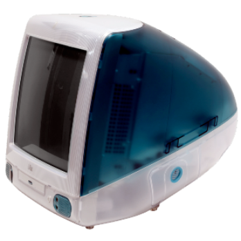

The iMac
The first iMac was released in 1998 and was a groundbreaking all-in-one computer designed by Apple Inc.
It featured a unique and colorful translucent design, a 233 MHz PowerPC G3 processor, 32 MB of SDRAM, a 4 GB or 6 GB hard drive, and a 15-inch CRT display with 1024x768 resolution.The iMac also included a variety of ports, including USB and FireWire, and was one of the first computers to eliminate the floppy drive in favor of CD-ROMs.
The iMac was a huge success for Apple and helped to revive the company's fortunes. Its innovative design and powerful performance set the stage for future iMac models and helped to establish Apple as a leader in the computer industry.
| iMac Specifications | |
|---|---|
| Processor | 233 MHz PowerPC G3 |
| Memory | 32 MB SDRAM, expandable to 128 MB |
| Hard Drive | 4 GB or 6 GB Ultra ATA |
| Optical Drive | 24x CD-ROM |
| Display | 15-inch CRT with 1024x768 resolution |
| Graphics | ATI Rage IIc graphics with 2 MB VRAM |
| Networking | 10/100BASE-T Ethernet |
| Ports | 2x USB, 2x FireWire, 1x Ethernet, 1x Modem, 1x Audio Out, 1x Audio In |